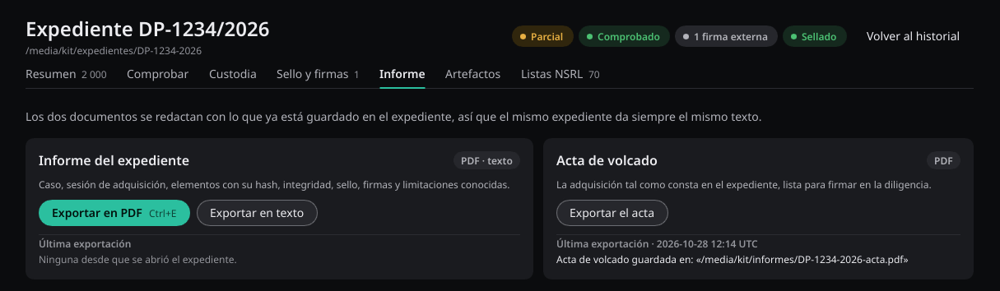

El expediente
| Fichero | Contenido |
|---|---|
manifest.json | Hash SHA-256, tamaño, origen y
estado de cada elemento; el hash de case.json y de
preflight.json; y el del último asiento de la auditoría al
cerrarlo. |
audit.jsonl | Registro de auditoría encadenado por hash. |
case.json | Caso, operador, habilitación y alcance. |
preflight.json | Estado del equipo al adquirir: discos con su número de serie, licencia y hash del ejecutable de Foruster. |
raw/ | Lo copiado: ficheros, imágenes y volcados de memoria. |
manifest.sig, signature.json | Firma Ed25519 del manifiesto y quién la hizo. |
manifest.tsr, timestamp.json | Sello de tiempo del manifiesto. |
external-signatures/ | Firmas hechas fuera de Foruster. |
Las tres últimas filas solo existen si se ha firmado, sellado o adjuntado
una firma. Si cambian case.json o
preflight.json, la comprobación falla.
Un elemento que falla deja el expediente en parcial, y así consta en el manifiesto, la auditoría y el informe. Que la comprobación salga bien significa que el expediente está íntegro, no que la adquisición esté completa.
Informe
foruster-cli report /casos/EXP-1-2026
foruster-cli report /casos/EXP-1-2026 --pdf --output informe.pdf
El informe solo lee lo que está guardado en el expediente, así que el
mismo expediente da siempre el mismo documento. Incluye las limitaciones
que afectan a ese caso. --pdf necesita --output.
Foruster no escribe el informe dentro del expediente ni sustituye un
fichero que ya exista, salvo con --force.

Paquete de diagnóstico
Si algo falla y quieres que lo revisemos, diagnostics escribe
un JSON con la versión, la plataforma, códigos de error y recuentos. No
lleva texto libre, rutas, nombres de fichero ni datos del caso, y
Foruster no lo envía a ningún sitio. Revísalo antes de entregarlo.
foruster-cli diagnostics --container /casos/EXP-1-2026 --output diagnostico.json